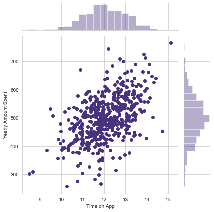
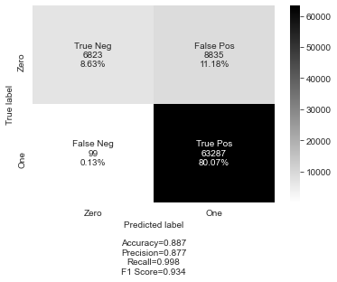
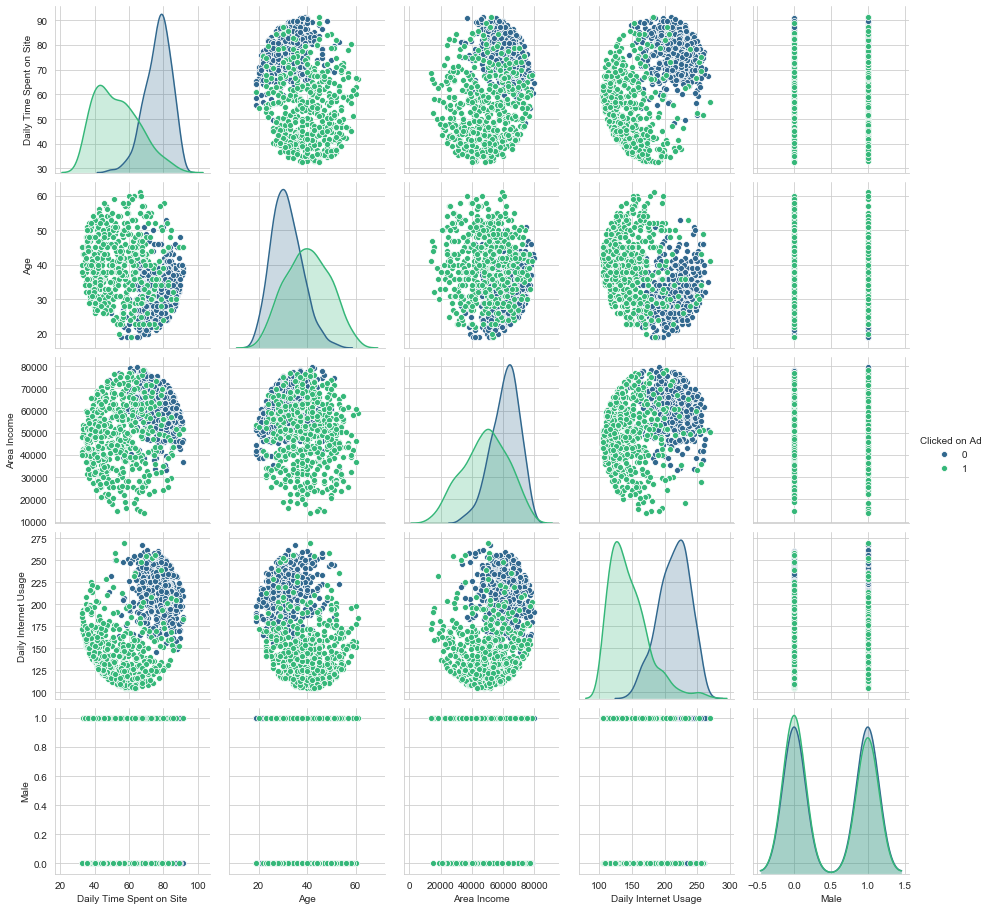
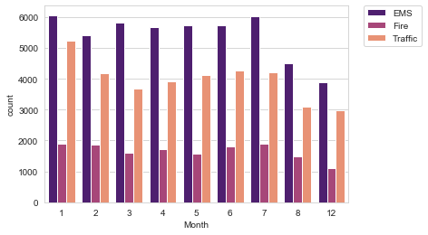

Dataset involves customer data from an Ecommerce company that specializes in selling clothing online.
This company allows online shopping to be done via a website or via a mobile app. Following Exploratory Data Analysis, a linear regression model was implemented
to compare the two methods of shopping, and yearly sales was used as the comparison metric.

LendingClub is a US peer-to-peer lending company and the dataset contains historical data on loans given out in the past.
The objective of this project is to build a model that is capable of predicting if a potential borrower will pay back their loan. Model involves a multi-layer
neural network which utilizes the sigmoid function for binary classification.

Ad revenues are becoming an increasingly lucrative way for companies to monetize their products and apps. The objective of this project was to build a model that
can predict whether or not an internet user will click on an ad based off the features of that user. Subsequently, deature engineering was performed and a logistic
regression model was trained and evaluated.

Introductory project featuring Exploratory Data Analysis using the seaborn library in Python.